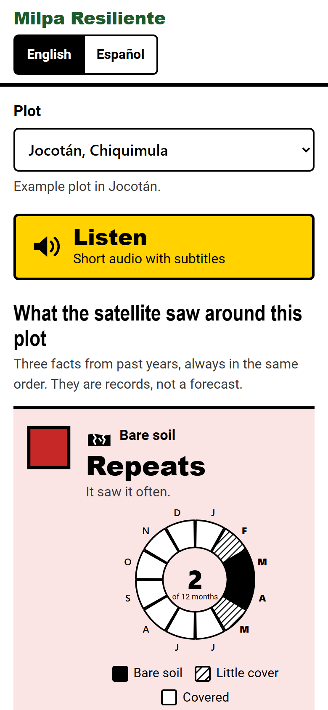
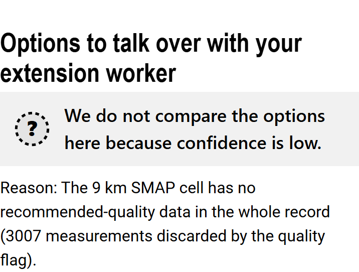
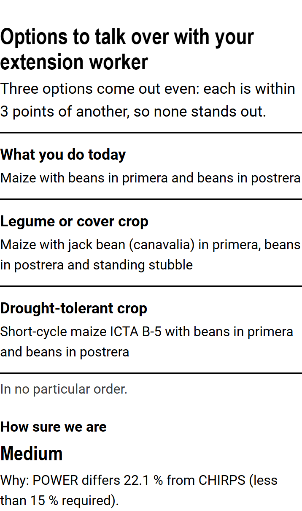
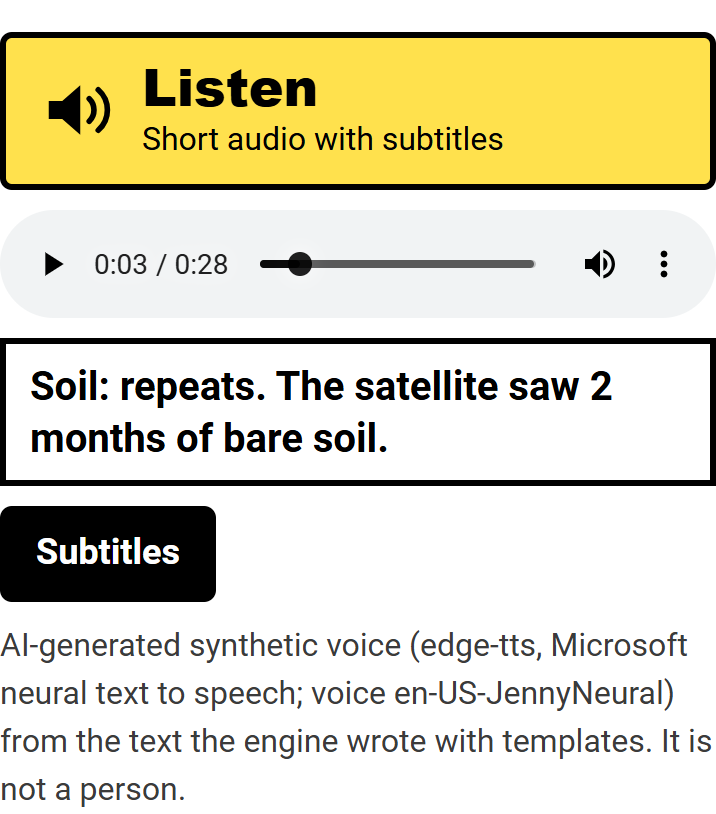

Milpa Resiliente
NASA satellite records turned into three facts a farmer can see and hear, for the milpa in Guatemala’s Dry Corridor.
Challenge: Field ShiftNASA Space Apps Challenge 2026
Team “A dream”
Rodolfo Xiloj · Mario · Iván
Chiquimula: the same three hits
Canícula
2 of 25 years
Midsummer dry spell longer than 15 days in Jocotán.
Burning
3 of 15 years
Fire detected within 500 m of the Jocotán plot, Jan–May.
Bare soil
3 of 12 months
Bare soil around the plot in Feb–Apr at San Juan Ermita, before the rains.
2026: 3.2 million people (17 %) forecast in food crisis or worse in Guatemala for Jul–Sep; Chiquimula and Zacapa at 15–19 % (SESAN, IPC forecast).
2019: average maize losses of 78.1 % in 201 communities monitored by Oxfam, 23 of them in Jocotán, Camotán, San Juan Ermita and Olopa.
2018: 175,126 ha of crop losses in Guatemala, mainly maize and beans (preliminary MAGA figure, via FAO GIEWS). Jul–Aug 2026: 20–26 % of normal rain at our 5 plots (CHIRPS v3). An observation, not a forecast.
Farmer view: an icon and a word

- GoodCircle
- WatchTriangle
- RepeatsSquare
- Grey: “The satellite can’t see well here”When data is missing, we say so instead of guessing.

The three facts are the three problems that Kuxur Rum (“my humid land” in Ch’orti’) tackles: permanent cover, no burning and soil moisture through the canícula. FAO and Guatemala’s Ministry of Agriculture have promoted it in Chiquimula since 2000; by 2006 more than 7,000 farms had adopted it.
A tie: no winner today. Not in 2041–2060.

Olopa, three rotations: score today and NASA NEX-GDDP-CMIP6 futures held (SSP2-4.5, 2041–2060):
879/33What you plant today
909/33Maize with jack bean
9233/33Short-cycle maize ICTA B-5
Rule: 3 points or less apart = a tie. Jack bean ties with both others, so all three are shown, in no order. The rule works as a chain. Holds = water as good as today’s practice in today’s climate. Median model: -6.7 % June–August rain, +1.4 °C. With high emissions, today’s practice holds in 3 of 34.
Elsewhere both alternatives lead today’s practice by 5 to 8 points and tie with each other: Jocotán 88 / 87 vs 80, San Juan Ermita 88 / 86 vs 80. Camotán (90 / 89 vs 84) and Zacapa (81 / 80 vs 73) show the same gap, but confidence is low there, so the options go grey.
NASA product → the decision it drives
| Product | Decision on the farmer screen |
|---|---|
| MODIS MOD13Q1NDVI, 250 m, 16-day | → Bare-soil and low-cover months → Bare soil fact and soil score |
| FIRMS (VIIRS, Suomi NPP)Active fire, 375 m; a detection is a pixel centre | → Fire years within 500 m, Jan–May → Burning fact |
| CHIRPS v3 daily “sat”Rain at ~5 km; NASA IMERG’s daily split arrives inside it | → Dry spells over 15 days (< 2 mm/day) → Canícula fact and water deficit |
| SMAP SPL3SMP_ESoil moisture, 9 km, top 5 cm | → Jul–Aug soil moisture; missing quality data → grey, low confidence |
| NEX-GDDP-CMIP633–34 climate models, 0.25°, 2041–2060 | → Rain and heat change per model → how many futures each rotation holds (Evidence) |
CHIRPS comes from the UCSB Climate Hazards Center (Funk et al., 2026); we did not download IMERG directly. MODIS, FIRMS, SMAP and NEX-GDDP-CMIP6 come from NASA (CMIP6 precomputed offline in Google Earth Engine). Also used: NASA POWER (temperature, ET0), SRTM (slope, 90 m) and cached NASA GIBS map layers.
Where it fails
Not an official alert.The audio ends: “This is not an official notice: talk it over with your extension worker.”
Thresholds were set after seeing the data.The cut-offs were chosen after counting the 5 plots, not before. An agronomist still has to review them.
- The 5 plots are example points chosen by satellite, not verified in the field.
- 2018 back-test: high risk at 5 of 5 plots, but also 2–3 false alarms and 1 miss in 20 years per plot. Against seven years with documented losses it misses 2016, 2019 and 2023 at every plot.
- Olopa: greenness barely follows the rain deficit, Spearman ρ = 0.07.
- Zacapa: NASA POWER differs 55.4 % from CHIRPS in Jul–Aug → grey.
- Camotán: 3007 SMAP readings fail the quality flag → grey.
- A family here farms about 0.35 ha on average; one MODIS pixel is 6.25 ha. We see the land around the plot, not the plot.
- Suomi NPP stopped delivering new data in early November 2026 and Terra is being retired: updates would move to VIIRS on NOAA-20 and NOAA-21.
Audio, no internet, next steps
Audio
One tap on Listen: under 30 seconds per plot, Spanish or English voice, with subtitles in both. The voice is synthetic (AI) and says so.

No internet
- Built to be served from a laptop on a local network: 5 plots, audio and data are local files. Not yet tried in the field.
- The map falls back to saved MODIS layers.
- Checked by
npm run sin-redwith the internet blocked.
Next steps
- Visit the plots with extension workers.
- Agronomist review of thresholds and scores.
- Comprehension test of pictograms and audio.
- Ch’orti’ audio recorded by native speakers: the script and the audio slot are ready.